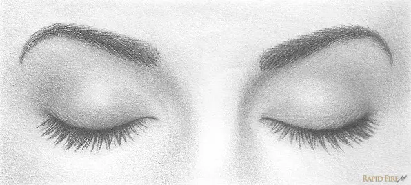

الأسرار العظيمة لغض البصر وفوائده الخفية
مقدمة
غض البصر ليس مجرد توجيه ديني بل هو باب عظيم من أبواب الطمأنينة العقلية والنفسية. أمر به الإسلام وأوصى به الرسول ﷺ لحكمة عظيمة تتجاوز اللحظة العابرة للنظر. في هذا المقال نكشف لك الأسرار العظيمة والخفية التي لا يعرفها كثيرون عن غض البصر، وتأثيره الحقيقي على حياة الإنسان.
ما الذي يحدث عند عدم غض البصر؟
عند النظر إلى صور أو مشاهد غير لائقة، تُخزن هذه الصور في العقل الباطن. يستخدمها الشيطان لاحقًا ليعيد تذكير الإنسان بها في لحظات ضعفه، مما يسبب إعادة التخيل والتفكير المستمر، وقد يؤدي إلى الانجراف وراء الشهوات والوساوس والتعلق بهذه الصور عقليًا وعاطفيًا.

الفوائد العظيمة لغض البصر
- إغلاق الباب الذي يدخل منه الشيطان.
- راحة عقلية ونفسية نتيجة تقليل التفكير المفرط في المحرمات.
- حماية خلايا الدماغ من الاستنزاف الذهني والتشتيت.
- زيادة التركيز في الدراسة والعمل وتقوية الحفظ والاستيعاب.
- صفاء داخلي واستقرار عاطفي بعيدًا عن التقلبات النفسية الناتجة عن الصور المثيرة.
غض البصر للنساء أيضًا
كما يُطلب من الرجال غض البصر، يُطلب من النساء أيضًا عدم التعلق بالشكل الخارجي للشباب أو التفكير المفرط فيهم، لأن نفس آلية التكرار والوسوسة الشيطانية تنطبق على الطرفين. فغض البصر يحمي القلب والعقل معًا، للرجل والمرأة على حد سواء.
لماذا أمرنا الرسول بغض البصر؟
قال الله تعالى: "وما آتاكم الرسول فخذوه وما نهاكم عنه فانتهوا" [الحشر: 7]. لم يشرح النبي ﷺ كل شيء بالتفصيل لأن في اتباع أوامره الخير كله، وغض البصر أحد تلك الأوامر التي تحمل في طياتها منافع عظيمة لا ندركها إلا بالتجربة.